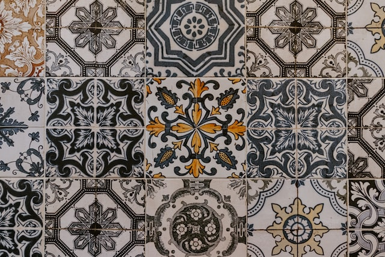

遊戲主要動作為拿取磚塊、完成花紋列、為完成的磚牆計分，遊戲結束時獲得最多分數的玩家獲勝。
我覺得這遊戲厲害的地方是遊戲有很多層次的考量，但是用了最少的動作和空間達到這件事，不需要太多複雜的配件和空間，玩家就可以有很多策略上的選擇。比如拿取磚塊時，從工廠還是場中央拿、拿什麼顏色等是一個考量，拿了磚塊要放
5
列花紋列的哪一列是一個考量，而花紋列右邊的磚牆又限制了可以放置到花紋列的磚塊，這些細膩的規則設計，讓這遊戲有很小的學習曲線，又有不錯的遊戲體驗。重點在於：怎麼拿、怎麼放而已，非常厲害。